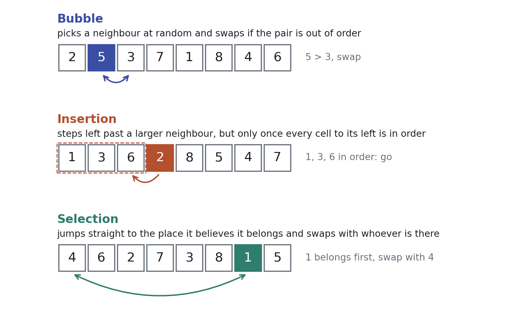
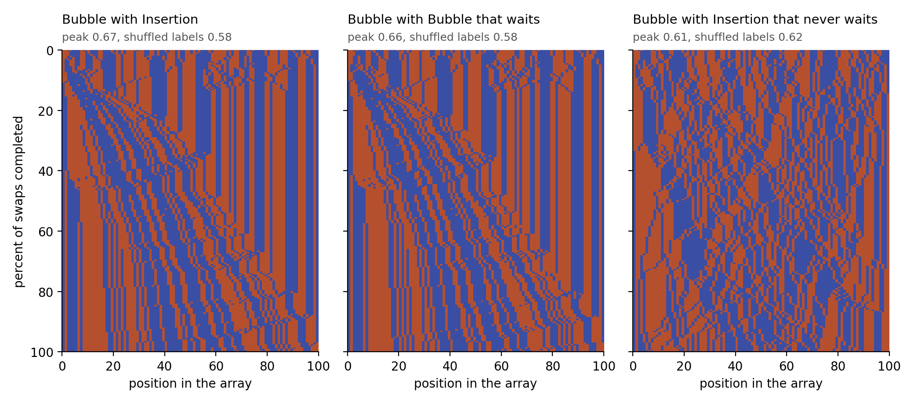
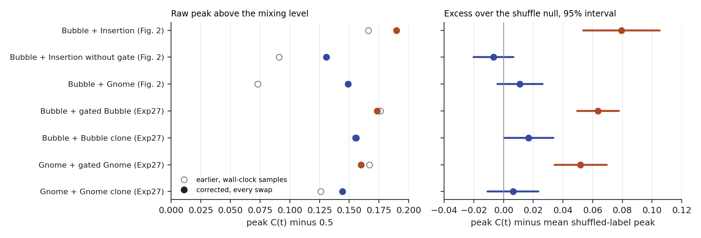
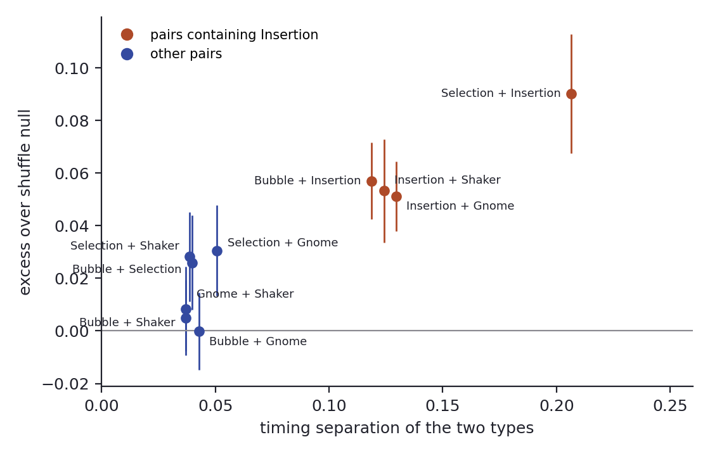
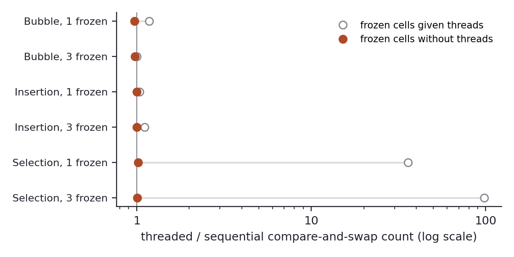

Cells that wait their turn form islands in self-sorting arrays
When cells running different sorting rules share one array, cells of the same kind gather while it sorts. The gathering follows a short-range waiting rule wherever we put it, and it survives the sort only when one kind keeps overtaking cells of equal value.
Report · revision 009 · 31 min read
Contents1Cells that wait their turn gather into islands2Same-kind cells gather more than shuffled colours would, as the original paper found3Larger arrays reach the same peaks, and the excess grows because chance falls4The wait makes the islands, and moving it moves them5A wait over the nearest dozen cells makes islands as strong as Insertion’s full wait6Selection gathers its cells by claiming the left end first7Islands outlast the sort when one kind keeps overtaking cells of equal value8An array with frozen cells keeps sorting when a blocked cell moves on9What the model predicts for mixed tissues10Local timing makes the islands and directed exchange keeps them11MethodsA.1What our earlier version got wrongA.2Follow-up resultsA.3Independent checksA.4Receipts
Zhang, Goldstein and Levin [1][1]T. Zhang, A. Goldstein, and M. Levin, “Classical sorting algorithms as a model of morphogenesis: Self-sorting arrays reveal unexpected competencies in a minimal model of basal intelligence,”Adaptive Behavior, 2024, Available: https://arxiv.org/abs/2401.05375 turned every number in an array into a cell that sees only its neighbours and swaps by its own rule, and the array sorts itself anyway. When they mixed cells running two different rules, cells of the same kind gathered into islands while the array sorted, and the authors suggested that cells with the more efficient rule settle first. We find that the islands come from waiting, and from a short-range wait at that. Insertion cells wait until everything to their left is in order, yet a cell that waits only for the nearest dozen cells to its left gathers as strongly, the same wait in front of Bubble’s move does the same, and Insertion cells that never wait gather no more than chance. Selection reaches a similar count of like neighbours by a second route, with its cells claiming the left end of the array first. The islands dissolve once the array is sorted unless one kind of cell keeps overtaking others holding the same value in one direction, and that needs neither long jumps nor an efficient rule. The original clustering result holds against a stricter test, and an array with frozen cells keeps sorting because a cell whose target is frozen moves on to the next one, whether or not the cells share a lock.
1Cells that wait their turn gather into islands
Take a row of a hundred numbers in random order and make each number a small cell that can see only its two neighbours. Give every cell a rule for when to swap places, let the cells act one at a time in no fixed order, and the row sorts itself, with no cell ever seeing the whole array and nothing in charge of the outcome. Zhang, Goldstein and Levin built this as a minimal model of morphogenesis, the process by which an embryo’s cells find their places in a body [1][1]T. Zhang, A. Goldstein, and M. Levin, “Classical sorting algorithms as a model of morphogenesis: Self-sorting arrays reveal unexpected competencies in a minimal model of basal intelligence,”Adaptive Behavior, 2024, Available: https://arxiv.org/abs/2401.05375, because it asks the developmental question at a scale where every rule fits on a line: how much order can come from parts that each follow a local rule? Their code is open.
The cells borrow their rules from three textbook sorting algorithms. A Bubble cell picks a neighbour at random and swaps with it if the pair is out of order. An Insertion cell steps left past a larger neighbour, but only once every cell to its left is already in order, so it spends most of a run waiting. A Selection cell aims for the place it believes it belongs, starting at the left end, and jumps there directly, swapping with whoever holds a larger value there and aiming one place further on otherwise.

The three cell rules. Each cell acts on its own, sees only what its rule needs, and cannot tell what rule its neighbours run.
Now paint the cells by rule, half of them blue Bubble cells and half orange Insertion cells, shuffle them, and let the row sort. Partway through, the colours are no longer mixed at random: blue cells sit beside blue cells and orange beside orange, in short runs the paper calls aggregation and we will call islands, and once the row is sorted the islands dissolve again. Nothing in either rule refers to colour. So where do the islands come from?
The original paper suggested efficiency, with cells running the more efficient rule reaching their places first and the others catching up later, and it took the result further, predicting that a body built from cells of two kinds would form tissue-level islands. Their explanation already points at timing. We think the timing comes from one specific part of one rule, Insertion’s wait, and that the amount of work a rule does has nothing to do with it.

One run of each pair at 100 cells, time running down. Bubble cells are blue. Left, orange Insertion cells; middle, Bubble cells given Insertion's wait; right, Insertion cells with the wait removed. Above each panel are the run's peak share of same-type neighbours and the mean peak when the same run is replayed with its colours dealt out at random. All three panels start from the same row (run seed 5000, the first of the 40 runs in Table 1).
The picture shows what waiting does. In the left panel the orange cells mostly stand still, in vertical stripes, until the sorted stretch spreading in from the left reaches them, while the blue cells sort themselves around and between them, so the two kinds do their moving at different times. Give Bubble cells the same wait and the middle panel looks almost the same. Take the wait away from Insertion and the stripes break up, and with them any gathering beyond what randomly dealt colours would show.
The wait that matters is short. A cell that waits only until the dozen cells to its left are in order gathers as strongly as one that waits for the whole row, so the islands come from cells holding still while their own neighbourhood sorts, and a count of when each kind moves over the whole run captures that only roughly. Selection, which never waits, gathers its cells by another route: its cells claim the left end of the row first and push the other kind to the right.
The islands vanish when the row finishes sorting, unless values repeat and one kind of cell keeps overtaking others holding the same value, always in the same direction. And when some cells are frozen and refuse to move, the array keeps sorting only if a cell whose target is frozen moves on to the next place, whether the cells take turns, run as parallel threads, or act on stale information with no lock at all.
The islands are a product of local schedules. Cells that move at a different time from their near neighbours end up beside their own kind for a while, and whether anything of that history survives into the finished array depends on whether one kind consistently pushes past its equals.
2Same-kind cells gather more than shuffled colours would, as the original paper found
How do you know a run of three orange cells is an island and not luck? In a random half-and-half row about half of all neighbouring pairs already match in colour, and a sorting run passes through thousands of arrangements, so its best moment will beat one half by chance alone. Our yardstick replays each run with the colours dealt out again at random: the cells make exactly the same moves, and only the paint changes. If colour has nothing to do with how cells move, the real colours should do no better than the dealt ones.
Against that yardstick the original result holds. At the original size of 100 cells holding distinct values, mixing two rules makes the share of same-type neighboursThe share of neighbouring pairs whose two cells run the same rule, written C. In a random half-and-half arrangement of 100 cells it is close to one half, and it peaks somewhere while the array sorts. The original paper calls it the aggregation value. peak 0.07 to 0.12 higher than the same runs with shuffled coloursThe same sorting run replayed with its cells’ rule labels dealt out again at random, 200 times per run. The cells make the same moves; only which cells count as the same kind changes. Its mean peak is the level that the real peak must beat., and two copies of one rule under different names peak no higher than their shuffles (within 0.01). The paper’s own control, which ran identical rules under two labels, peaked between 0.57 and 0.65, and ours peak between 0.57 and 0.62, right at their shuffle level, so the original control level is what the highest point of a noisy curve looks like when colour has no effect. The original comparison of mixed arrays, which the paper calls chimerasThe original paper’s word, borrowed from biology, for an array or an organism built from cells of two kinds. Here an array in which half the cells run one rule and half another., with those identical-rule controls was the right comparison, and its conclusion stands.
Pair, 100 distinct values
Original peak
Our peak
Shuffle null
Excess (95% interval)
Peak position, original and ours
Runs above 95% of shuffles
Bubble with Bubble
control, 0.57 to 0.65
0.621
0.619
0.002 (−0.006 to 0.010)
· and 42%
1 of 40
Insertion with Insertion
control, 0.57 to 0.65
0.567
0.561
0.006 (−0.006 to 0.018)
· and 33%
1 of 40
Selection with Selection
control, 0.57 to 0.65
0.616
0.611
0.005 (−0.004 to 0.014)
· and 37%
2 of 40
Bubble with Selection
0.72
0.686
0.613
0.073 (0.060 to 0.085)
42% and 36%
23 of 40
Bubble with Insertion
0.65
0.666
0.586
0.080 (0.068 to 0.092)
21% and 20%
22 of 40
Insertion with Selection
0.69
0.711
0.588
0.124 (0.105 to 0.142)
19% and 23%
33 of 40
The excessA run’s peak share of same-type neighbours minus the mean peak over 200 shuffles of its own labels. Zero means the labels carry no information about how cells move. column is each run’s peak minus the mean peak of its 200 shuffles, averaged over 40 runs. The original lists its control peaks per panel without naming which identical rule each panel used, so the control column gives their range11 The paper’s clustering value is the fraction of cells whose right-hand neighbour runs the same rule (p. 10). Its code divides by all 100 cells, so the last cell always scores zero and a random arrangement averages 0.49. We divide by the 99 neighbouring pairs, which puts the random level at 49/99 and raises every value by a factor of 100/99.1 The paper’s clustering value is the fraction of cells whose right-hand neighbour runs the same rule (p. 10). Its code divides by all 100 cells, so the last cell always scores zero and a random arrangement averages 0.49. We divide by the 99 neighbouring pairs, which puts the random level at 49/99 and raises every value by a factor of 100/99.. Each run also carries its own test, and in Insertion with Selection the real peak beats 95% of the shuffled peaks in 33 of 40 runs, while for identical rules this happens in one or two runs of forty, about as often as chance allows.
Share of same-type neighbours, averaged over 40 runs at 100 cells, on a common axis of swaps completed. Dotted lines are the averaged shuffled-colour curves, at about 0.495 in every panel. "Gated Bubble" is Bubble with Insertion's wait. An averaged curve peaks lower than the average of the runs' own peaks in Table 1, because individual runs peak at different moments.
The averaged curves also settle an apparent contradiction in the original paper. The caption of its Figure 8 says the control curves show no significant deviation from 50% and the mixed curves peak at 60% (pp. 33 to 34), while its text quotes control peaks of 0.57 to 0.65 and mixed peaks of 0.65 to 0.72 (pp. 13 to 14). Each is right about a different statistic. A curve averaged over runs stays near one half whenever colour carries no information (our identical-rule averages peak at 0.509 to 0.519, our mixed averages at 0.604 to 0.666), while the text’s numbers behave like the average of each run’s own highest point, which is the statistic in Table 1. What needs correcting is the reference level: a peak of the second kind has to be read against shuffles that peak at 0.56 to 0.62, as the text effectively does by comparing with its controls, and never against one half.
Like cells in a mixed array really do gather while it sorts. The fair comparison is the same run with the colours shuffled, and the original paper’s identical-rule controls were already doing that job.
3Larger arrays reach the same peaks, and the excess grows because chance falls
Does the gathering get stronger in longer rows? The highest share of same-type neighbours a run reaches hardly moves with size: from 30 to 400 cells it stays between 0.665 and 0.734 in all three mixed pairs. What moves is the chance level. A longer row has more neighbouring pairs, so its share of matching pairs wanders less far from one half, and the shuffled peak falls from 0.62 to 0.65 at 30 cells to 0.55 to 0.57 at 400. The same raw peak then stands further above chance, and the excess of Bubble with Selection triples from 0.036 to 0.109 while that of Bubble with Insertion doubles from 0.060 to 0.120.
Cells
Shuffle peak, range over pairs
Bubble with Selection
Bubble with Insertion
Insertion with Selection
Separation, Bubble with Insertion
30
0.622 to 0.649
0.036 (0.016 to 0.055)
0.060 (0.041 to 0.078)
0.112 (0.086 to 0.138)
0.119
50
0.608 to 0.636
0.049 (0.031 to 0.067)
0.056 (0.042 to 0.070)
0.098 (0.077 to 0.119)
0.100
100
0.586 to 0.613
0.073 (0.060 to 0.085)
0.080 (0.068 to 0.092)
0.124 (0.105 to 0.142)
0.083
200
0.564 to 0.591
0.076 (0.067 to 0.084)
0.101 (0.092 to 0.111)
0.113 (0.102 to 0.124)
0.063
400
0.547 to 0.571
0.109 (0.104 to 0.115)
0.120 (0.115 to 0.125)
0.128 (0.121 to 0.135)
0.034
Each pair column gives the excess over 200 shuffles per run, averaged over 40 runs, with its 95% interval; separation is defined in the next section. Insertion with Selection stays between 0.098 and 0.128, because its raw peak drifts down from 0.734 to 0.682 along with the chance level.
Selection’s clustering does not grow faster than anyone else’s. Bubble with Selection sits below Bubble with Insertion at every size and gains nothing from 100 to 200 cells, so nothing in its rise with size ties it to the length of Selection’s jumps, which grow with the row.
Longer rows make the same gathering easier to tell from chance, so excess values compare fairly only at one size, and the rest of this report compares rules at 100 cells unless it says otherwise.
4The wait makes the islands, and moving it moves them
What does Insertion do that makes its cells gather? Every rule here except Selection moves a cell one step at a time past an out-of-order neighbour, and they all make exactly one swap per out-of-order pair, so they do the same total work. What differs is when they do it. Insertion’s wait holds most of its cells still until the sorted stretch reaches them, which is the vertical striping in the left panel of Figure 2.
So we moved the wait. Giving Bubble cells Insertion’s wait (waiting BubbleDelayedBubble in the data: Bubble’s move with Insertion’s wait in front of it, so a cell acts only once every cell to its left is in order. DelayedGnome adds the same wait to Gnome.) raises their excess over the shuffles from 0.017, for a plain copy of BubbleBubbleClone and GnomeClone in the data: an exact copy of the rule under a second name, so that pairing a rule with its clone makes a mixed array in name only. under another name, to 0.064, close to the 0.061 that Bubble with Insertion reaches in the same experiment, at 612 against 616 swaps per run on average. Giving the wait to GnomeA deterministic neighbour-swap rule: a cell steps left past a larger left neighbour if it can, and otherwise right past a smaller right neighbour. raises its excess from 0.006 to 0.052. Taking the wait away from Insertion (Insertion without the waitInsertionNoWait in the data: Insertion’s move, stepping left past a larger neighbour, without the wait.) drops Bubble with Insertion from an excess of 0.079 to −0.007, which is no clustering at all: its raw peak still sits 0.131 above one half, but the shuffles of that same pair already sit 0.137 above it.

Removing the wait (top three rows; 50 cells, 20 runs) and adding it to Bubble and Gnome (bottom four rows; 50 cells, 30 runs). Pairs with a waiting rule are orange, pairs without one blue. Right, excess over the shuffled colours with 95% intervals. Left, raw peak above one half, which shows how much of each raw value is chance, about 0.11 to 0.14 at this size; its open circles are the values of our earlier version, which sampled the arrays by wall-clock time (see the appendix).
The effect is real in the average and faint in any single run. At 50 cells only about one run in five of each waiting pair beats its own shuffles at the 5% level, and at 100 cells about half do (22 of 40 for Bubble with Insertion), so a single run like the one in Figure 2 illustrates the tendency without proving it.
A second measurement says the same thing across rules we never modified. Give each swap its place in the run, from 0 for the first to 1 for the last, and ask how far apart the two kinds’ average swap times are; we call that gap separationEach swap gets its position in the run from 0 (first) to 1 (last), each type gets the mean position of its own swaps, and separation is the difference between the two types’ means. Near zero, the types do their moving interleaved; larger, one type does its moving earlier.. Across ten pairs at 30 cells drawn from Bubble, Selection, Insertion, Gnome and ShakerA neighbour-swap rule that alternates between checking its right and its left neighbour., the four pairs containing Insertion separate by 0.12 to 0.21 and cluster 0.05 to 0.09 above their shuffles, while the six others separate by only 0.04 to 0.05 and cluster 0.00 to 0.03 above theirs.

Excess over the shuffled colours against separation, 30 cells, 50 runs per pair, with 95% intervals. The correlation is 0.94 over all ten pairs, 0.97 within the four Insertion pairs and 0.43 within the other six.
Delaying one kind of cell is enough to make it gather: a rule given the wait clusters, and Insertion without its wait does not. The next two sections ask how far the wait has to reach, and what the Selection pairs, which cluster a little at low separation, are doing instead.
5A wait over the nearest dozen cells makes islands as strong as Insertion’s full wait
If the wait makes the islands, a weaker wait should make weaker islands. We gave cells a graded waitInsertionK and BubbleK in the data: a cell acts only once the k cells immediately to its left are in order. A wait over 0 or 1 cells never holds anyone back, and a wait as long as the row is Insertion’s full wait., in which a cell acts only once the k cells immediately to its left are in order, and ran it at 100 cells against Bubble, once with Insertion’s move behind the wait and once with Bubble’s, 40 runs for each of thirteen values of k.
The islands grow smoothly with the reach of the wait and stop growing at about a dozen cells. With Insertion’s move, the excess climbs from nothing at k = 2 (−0.006) through 0.026 at k = 4 and 0.065 at k = 8 to 0.076 at k = 12, within 0.004 of the full wait’s 0.080. With Bubble’s move behind the same wait the curve follows to within 0.006 at every k (0.075 at k = 12, 0.079 with the full wait), so the kind of move a waiting cell makes does not matter, only how far its wait reaches.
Bubble paired with cells under a graded wait, 100 cells, 40 runs per point, with 95% intervals. Orange circles, Insertion's move behind the wait; blue squares, Bubble's move. "All" is the full wait over the whole row, which is Insertion itself and Bubble with Insertion's wait.
Separation follows the excess across the thirteen settings (correlation 0.94 with Insertion’s move, 0.93 with Bubble’s), but it stops growing first. Between k = 6 and k = 12 separation barely changes (0.079 to 0.082) while the excess rises from 0.047 to 0.076, an excess that grows by more than half with no matching change in when the two kinds move. Within a setting separation says nothing at all, since across the 40 runs of one setting a run that separates more does not cluster more (correlations between −0.30 and 0.17). And across sizes it moves the wrong way: Bubble with Insertion separates less in longer rows (0.119 at 30 cells, 0.034 at 400) while its excess doubles.
We read all three as one fact: the wait acts locally. A waiting cell holds still until the short stretch to its left has sorted, which keeps a few cells of its kind in place while the other kind rearranges around them, and a stretch of about a dozen cells is enough to hold the islands a run actually forms. A run-wide average of swap times registers that only as a side effect, which is why it grows with k at first and then stalls, and why in a long row, where many stretches sort at overlapping times, the run-wide average flattens while islands keep forming. We have not measured island lengths directly, and the account predicts that the typical island at the peak stays near a dozen cells whatever the row length, and that a rule making longer islands would push the saturation point of k out with them.
The islands come from cells that hold still while their immediate neighbourhood sorts. The wait has to reach about a dozen cells, and the move behind it can be either rule’s, so separation over the whole run is a rough stand-in for the cause, good for comparing families of rules at one size and blind to the local effect that matters.
6Selection gathers its cells by claiming the left end first
Timing leaves one pair unexplained, and at 100 cells it is no longer a small one. Bubble with Selection separates by 0.015, no more than Bubble with an identical copy of itself (0.013), yet it clusters 0.073 above its shuffles, nearly as much as Bubble with Insertion at a separation of 0.083. Over six pairs at this size (Bubble with its copy, with Gnome, with Insertion with and without the wait, and both Selection pairs) the correlation between separation and excess drops to 0.81, and this pair is the one off the line.
Selection’s gathering is spatial. At each run’s peak we measured the gradientThe correlation, at a run’s peak, between a cell’s position along the row and its kind. Near zero, both kinds spread evenly along the row; at 0.3 to 0.5, one kind is concentrated toward one end. of kind along the row, the correlation between a cell’s position and its kind. In every waiting pair it stays within 0.07 of zero, so the islands are scattered along the whole row, while in Bubble with Selection the Selection cells crowd toward the left end (0.30) and in Insertion with Selection even more so (0.49). A Selection cell starts with its pointer at the left end and swaps with the first larger value it finds there, so early in a run Selection cells claim the left end and push the cells they displace to the right, building one broad front of their own kind without any difference in when the two kinds move. The front holds at every size from 30 to 400 cells (gradient 0.24 to 0.33 for Bubble with Selection, 0.44 to 0.54 for Insertion with Selection). Insertion with Selection has both routes at once, separation 0.228 and gradient 0.49, and it clusters most of the three mixed pairs at every size.
There are two routes to the same count of like neighbours. Waiting makes many short islands scattered along the row, and Selection makes one broad front at the end where its pointers start. The share of same-type neighbours, the paper’s aggregation value, cannot tell them apart, and the timing account covers only the first.
7Islands outlast the sort when one kind keeps overtaking cells of equal value
Now let the values repeat, with 100 cells holding the numbers 1 to 10 ten times each, as in the original’s second experiment. Two cells holding a 7 are like two people with the same ticket number in a queue: once the queue is in order, nothing says which of them stands first. The original found that clustering then lasts to the end, at 0.65 for Bubble with Selection and 0.7 for Insertion with Selection, and read this as support for the efficiency explanation, since Selection is the more efficient rule (p. 14).
We reproduce the lasting islands, and they come with Selection. Insertion with Selection ends at 0.703 and Bubble with Selection at 0.690, both about 0.2 above the shuffles of the final arrangement. Every pair without Selection ends at the shuffle level, including Bubble with Insertion and Bubble with waiting Bubble, which both gather strongly partway through (peaks 0.659 and 0.660) and then let the islands dissolve.
Pair, values 1 to 10 repeated
Original
Peak (mean position)
Final
Final shuffle null
Final excess (95% interval)
Runs keeping equal values in order
Insertion with Selection
final 0.7, maximum 0.71 at 100%
0.719 (43%)
0.703
0.495
0.207 (0.196 to 0.218)
0 of 40
Bubble with Selection
final 0.65, maximum 0.69 at 100%
0.706 (71%)
0.690
0.496
0.195 (0.181 to 0.208)
0 of 40
Bubble with Insertion
maximum 0.63 at 13%
0.659 (17%)
0.510
0.495
0.015 (−0.002 to 0.031)
40 of 40
Bubble with DelayedBubble
·
0.660 (15%)
0.510
0.495
0.015 (−0.002 to 0.031)
40 of 40
Bubble with InsertionNoWait
·
0.603 (31%), null 0.613
0.510
0.495
0.015 (−0.002 to 0.031)
40 of 40
Bubble with Bubble
·
0.627 (36%), null 0.616
0.510
0.495
0.015 (−0.002 to 0.031)
40 of 40
Insertion with Insertion
·
0.565 (40%), null 0.557
0.510
0.495
0.015 (−0.002 to 0.031)
40 of 40
Selection with Selection
·
0.583 (42%), null 0.582
0.495
0.496
−0.000 (−0.016 to 0.015)
0 of 40
The rows without Selection end identically because those runs end in identical arrangements. Bubble, Insertion and their variants swap only neighbours that are strictly out of order, so two cells holding the same value never pass each other, and in every one of their runs each group of equal values ends in the order it started in; sorting rules with this property are called stableA sorting rule is stable when cells holding equal values never pass each other, so equal values end in the order they started in. Bubble, Insertion and Gnome are stable, because they swap only strictly out-of-order neighbours. Selection is not.. Their finished row is therefore fixed by the starting shuffle, which ignores colour, and it ends at the shuffle level whatever the rules’ timing, after exactly as many swaps as the starting row has out-of-order pairs (2,259 on average). Selection carries cells past their equals, and no run containing Selection kept equal values in their starting order.
Which part of Selection does it? We took it apart along two lines, whether a rule’s moves reach far or only to a neighbour and whether it may pass an equal value, and added a rule that passes equals with no pointer at all.
Pair, values 1 to 10 repeated
Reach
Passes equals
Final excess (95% interval)
Passes between equals per run
Rank of the second kind within equal values
Swaps per run
Insertion with Selection
far
yes
0.207 (0.196 to 0.218)
827
−0.63
1,187
Bubble with Selection
far
yes
0.195 (0.181 to 0.208)
721
−0.59
1,314
Insertion with neighbour-only Selection
neighbour
yes
0.262 (0.253 to 0.271)
195
−0.64
3,912
Bubble with neighbour-only Selection
neighbour
yes
0.160 (0.145 to 0.175)
150
−0.47
3,778
Bubble with Bubble that also swaps equals
neighbour
yes, either way
0.016 (0.001 to 0.031)
2,360
−0.00
4,619
Bubble or Insertion with strict neighbour-only Selection
neighbour
no
0.015 (−0.002 to 0.031)
0
·
2,259
Bubble or Insertion with sliding Insertion
far
no
0.015 (−0.002 to 0.031)
0
·
1,836 and 1,598
Bubble with Selection that never passes an equal
far
no
none of 40 runs sorted
·
·
·
Forty runs per pair at 100 cells, 200 shuffles of the final arrangement per run. The rank column is the correlation, within each group of equal values in the finished row, between a cell’s place in the group and being the second-named kind, averaged over groups; negative means the second kind ends toward the left of its equals. Sliding Insertion moves a cell left past the whole run of larger cells beside it in one move.
Long reach is not needed. Neighbour-only SelectionAdjSelection in the data: Selection’s pointer, but the cell moves one place at a time toward its target, past whichever neighbour stands there, including one holding the same value. The strict version steps only past a neighbour that is out of order., which keeps Selection’s pointer but moves one place at a time past whichever neighbour stands in the way, equal values included, leaves the strongest lasting islands in the study: with Insertion it ends 0.262 above the shuffles, against 0.015 for every stable pair. Forbid it to step past an equal and the excess falls back to 0.015. A far-reaching rule that cannot pass an equal, sliding Insertion, also ends at 0.015, and Selection itself, made to refuse any jump past an equal, makes about 340 swaps in two million turns and never finishes sorting in 40 runs, since a Selection cell with an equal value standing between it and its target can neither jump nor move its pointer on.
Passing equals is not enough either. Bubble cells that also swap with an equal neighbour pass equals 2,360 times per run, three times as often as Selection cells, and end at 0.016, the stable level.
What sets the lasting rules apart is direction. Inside each group of equal values in the finished row, Selection cells sit toward the left (rank correlation −0.59 to −0.64, and −0.47 to −0.64 for neighbour-only Selection), while equal-swapping Bubble cells end in no particular order (−0.00). A Selection cell’s pointer runs in from the left, so it only ever overtakes an equal by moving left, and every such pass moves the same kind the same way; the finished row then records which kind reached each group of places first, and the timing of the two kinds survives the sort. A Bubble cell that swaps equals does so in both directions and scrambles its own record.
Efficiency is not the cause. Insertion with neighbour-only Selection takes 3,912 swaps per run, more than three times the 1,187 of Insertion with Selection, and leaves larger lasting islands (0.262 against 0.207). The original read the lasting islands as support for the efficiency account (p. 14), and this pair is the cleanest evidence against it.
Lasting islands need one kind of cell to keep overtaking its equals in one direction. Reach, swap count and efficiency do not matter, and neither does how often equals trade places. The finished array keeps the order in which the two kinds claimed their places, and only a directed exchange among equals writes that order in.
8An array with frozen cells keeps sorting when a blocked cell moves on
Freeze some cells, so that they hold their value and never start a swap. Can the others still sort around them? The original found that its cell-based sorting coped with frozen cellsA frozen cell never starts a swap. In the stricter version nobody can move it either; under the original default, active neighbours may still swap it. better than the traditional algorithms (p. 11). We asked which part of a rule carries that robustness, taking Selection apart along two lines: how far its swaps reach (anywhere, or only to a neighbour) and what a cell does when its target place is frozen (move on to the next place, or wait).
Moving on is what matters. When nobody can move a frozen cell, only far-reaching Selection that reroutesWhat a Selection cell does when the place it is aiming for holds a frozen cell: it advances its pointer and aims for the next place. The waiting variant keeps aiming at the frozen place. sorts the active cells, in all 30 runs at 3, 6 and 9 frozen cells out of 30, and with fewer swaps as fewer cells take part (108 swaps with none frozen, 56 with nine). Far-reaching Selection that waits stalls as soon as its target is frozen, and the neighbour-only variants can never carry a cell across a frozen one, so they keep swapping until the 5-second time limit (on average 14,077 swaps for neighbour-only rerouting and 6,831 for neighbour-only waiting with three frozen cells, against 412 and 404 with none). Under the original default, in which frozen cells cannot start a swap but active neighbours can still move them, far-reaching rerouting sorts 3 of 15 runs with one frozen cell and none with two or three, and every other variant fails whenever a cell is frozen. These outcomes follow almost directly from the rules, so we read them as checks that the implementation does what the rules say.
Running cells as parallel threads changes none of this. The original runs every cell as its own thread, but all threads share one lock, so only one cell acts at a time and the operating system picks which, which amounts to a random one-at-a-time scheduler. With frozen cells given no thread, threaded and one-at-a-time runs of the same rules make the same number of comparisons within about 3% (ratios 0.97 to 1.02) and succeed equally often. Neither Bubble nor Insertion reached a sorted array in any of the nine runs in either mode, so their ratios compare runs stopped at the time limit.
Taking the lock away changes none of this either. We ran the four variants again on a lock-free substrateCells act without any lock: each looks at the array, decides on a swap, and carries it out after a random delay while other cells keep moving, so many swaps rest on information that has gone stale. The exchange itself is atomic, so no value is lost or copied., in which every cell looks at the array, decides on a swap and carries it out after a random delay while the others keep moving, so that many swaps rest on stale information. With nobody able to move a frozen cell, far-reaching rerouting sorts the active cells in all 30 runs at 3, 6 and 9 frozen cells with checked writesA write that is dropped if the cell or the occupant of its target place has moved since the cell looked, as a compare-and-swap on the two places would do. A blind write carries out the swap with whoever is there by then. at every delay, and in 29 or 30 of 30 with blind writes even when the delay averages three times the gap between one cell’s looks. Stale information costs it writes (182 instead of 82 with three frozen cells at the longest delay, 40 of them making the array less sorted) and never its success. The other three variants sort at most one run of 30 whenever cells are frozen, always the same starting row with three frozen cells, and the delay changes nothing about that.
Selection variant, immovable frozen cells
3 frozen, no delay
3 frozen, delay 3, blind
3 frozen, delay 3, checked
none frozen, delay 3, blind
none frozen, delay 3, checked
Far-reaching, rerouting
30
30
30
27
30
Far-reaching, waiting
1
1
1
30
30
Neighbour-only, rerouting
1
1
1
14
30
Neighbour-only, waiting
1
0
1
13
30
Runs that sort within the time budget, out of 30, at 30 cells. The delay between looking and writing is drawn at random with a mean given in units of the mean time between one cell’s looks; with no delay each look and its write are a single step, which is the locked substrate.
Stale information does separate the variants when nothing is frozen. With blind writes at the longest delay the neighbour-only variants sort only 14 and 13 of 30 runs, against 27 and 30 for the far-reaching ones, and checked writes bring all four back to 30. Under the original default, in which active cells may still move a frozen one, rerouting sorts 2 to 5 of 30 runs with one frozen cell at every delay (4 of 30 with no delay, against 3 of 15 in the locked runs) and almost none with more, as before.
Two of the follow-up’s scores need reading with care. Far-reaching rerouting’s KA search-efficiency score: the base-10 logarithm of how much less effort the cells spend reaching order than a blind search through every reachable arrangement would spend. K = 30 means 10 to the 30 times less. falls from 30.45 to 18.01 as frozen cells go from 0 to 9, which looks like a loss of competence, but K stays 1.7 to 2.0 below the logarithm of the number of arrangements the active cells can take, so it falls because there are fewer arrangements to search and says little about how well the cells search. The dipsA stretch in which the array becomes less sorted before it recovers past where it started. The original paper reads these dips as a form of delayed gratification. reproduce, with Bubble dipping in every run (34.8 times on average) and Selection in 98% of runs (3.7 times), but nobody has yet asked how often a random walk with the same number of swaps would dip, so they cannot yet carry the original’s reading.
A cell whose target is frozen either waits, and the sort stalls, or moves on to the next place, and the sort finishes. That one choice decides whether the array survives damage, and neither threads nor stale, lock-free updates change it; stale updates hurt only the neighbour-only rules, and only when their writes go unchecked.
9What the model predicts for mixed tissues
The paper’s prediction that a body built from two kinds of cells will form tissue-level islands (p. 18) becomes testable in the model once each run is compared with shuffles of its own labels, and our results split it in two. Islands that form during rearrangement and then dissolve should appear whenever two cell types differ in when they move relative to their near neighbours, with no difference in what the cells do or how efficiently. Islands that last should need one type to keep moving past cells of the same positional identity in one direction. In a chimeric worm or a mixed-cell aggregate, the second version predicts that lasting islands go with directed exchanges among cells of the same positional identity, one type ending ahead of the other within each group, and lasting islands where such exchanges can be ruled out would show that the sorting model is missing a mechanism the tissue uses. The first version adds a warning for measurement: a population that settles locally later than its neighbours can form islands with little difference in when the two types move over the whole tissue, so a tissue-wide timing difference is the wrong thing to look for.
Transient islands should follow when cells move relative to their neighbours, and lasting ones should follow one-way exchanges among equivalent cells, which is what an experiment on real tissue would need to measure.
9.1Claims we have not rechecked
Several original experiments have no corrected counterpart yet: arrays in which the two kinds sort in opposite directions and settle into an incompletely sorted balance, the three-rule mixture, the efficiency comparisons between cell-based and traditional sorting, and the rise in dips with the number of frozen cells, which the original uses to argue that the behaviour is not a random walk and which needs the same kind of chance baseline as the clustering. The original also describes the algorithms as deterministic (p. 16), while Bubble picks its neighbour at random and the operating system orders the threads, so seeded threaded runs do not repeat exactly. Until these are redone, those claims stand as the paper reports them, without an independent check.
10Local timing makes the islands and directed exchange keeps them
The self-sorting array is a small model organism with a rulebook we can read in full, and the principle of organization it shows here is a local schedule. Cells of one kind gather when they hold still while the dozen cells beside them sort, and moving that wait from one rule to another moves the gathering with it, which makes the wait’s reach a dial on the pattern, while Selection reaches a similar count of like neighbours through a front of cells that claim the left end first. What the finished array remembers of that history is held in the order among equal cells, the hidden variation that decides the outcome: stable rules leave it as the starting shuffle set it, symmetric swapping scrambles it, and only a kind that keeps overtaking its equals in one direction writes the history into the final pattern, however short its moves and however many swaps it wastes. In the lesion assay, whether the array keeps its future under damage comes down to one rule, moving on past a frozen target, and it holds whether cells take turns, run as threads, or act on stale views without a lock. The space of patterns this opens is small and structured, with the reach of a wait setting how strongly islands form and the direction of exchange among equals setting whether they last.
11Methods
The size, graded-wait, 100-cell and repeated-value results come from our own one-at-a-time reimplementation of the cell rules, in which a uniformly chosen cell acts at each step; the 30-cell separation comparison, the 50-cell wait removal and transplant, the frozen-cell factorization and the threading comparison come from the follow-up’s experiments on the original cell classes; and the lock-free results come from a separate event-driven simulation. Clustering is recorded after every swap, and curves from different runs are compared on a common axis of swaps completed. Every clustering result is scored against 200 shuffles of each run’s own labels, and intervals are 95% intervals over runs (mean ± 1.96 standard errors). Separation counts both cells of each swap. Table 1, the two repeated-value tables, Figure 3 and the graded wait use 100 cells and 40 runs per setting; the size comparison 30, 50, 100, 200 and 400 cells with 40 runs each, its 100-cell rows repeating Table 1 exactly; the separation comparison 30 cells and 50 runs per pair (seed 20260306); the wait removal 50 cells and 20 runs (seed 20260324), and the wait transplant 50 cells and 30 runs pooled over seeds 40 to 42; the threading comparison 30 cells and 9 runs per condition; the Selection frozen-cell variants 30 cells. Figures 1 and 2 are illustrations, the second drawn from one seeded run per pair.
The lock-free substrate is a seeded event-driven simulation instead of real threads without a lock. Each active cell looks at the array at times drawn from its own exponential clock, decides on one exchange from what it sees, and has that exchange written after a delay drawn from an exponential distribution with mean 0, 0.1, 0.3, 1 or 3 times the mean gap between its looks, while other cells keep looking and writing in between. A blind write exchanges the cell with whoever holds the target place by then, from wherever the cell stands by then; a checked write is dropped unless both places still hold the cells they held at the look. We chose a simulation for three reasons: the order in which real threads run is set by the operating system and does not repeat from a seed, the delay between looking and writing has to be a setting we control rather than whatever the hardware gives, and the original code’s Python threads share one interpreter lock, which hides the races we wanted. Exchanges stay atomic, because a torn write would lose or copy a value and the cells would no longer be sorting the array they started with. Each condition has 30 runs at 30 cells, with the same starting rows and frozen positions for every variant, delay and write mode, and a time budget of 1,000 look intervals, about seventeen times what neighbour-only Selection needs to sort with no frozen cells and no delay.
Appendix
A.1What our earlier version got wrong
The earlier follow-up by Pouey and Rohr reran the original rules from byte-identical copies of the upstream cell classes and introduced the wait removal and transplant, the factorization of Selection’s frozen-cell robustness into the reach of its swaps and its rerouting, and the comparison of threaded with one-at-a-time execution. Rechecking it found four problems that changed numbers. Clustering was scored as peak share minus one half, and the highest point of a noisy curve sits well above one half even when colour has no effect, so most of each reported increase was chance; the earlier description of the drop without the wait as a sharp reduction understated it, because without shuffles the remaining raw value of 0.091 looked like residual clustering. Its Figure 2 sampled the arrays every 0.02 seconds of wall-clock time, which gave the slower waiting runs more samples and therefore higher maxima. The threaded runs in the work comparison started threads for frozen cells, which the original’s multithread_cell_sorting_with_frozen_steps.py does not do, although its freezing_sorting_analysis.py does, and a frozen Selection thread keeps counting comparisons without moving. The result files behind the figures had not been committed.
The table sets the earlier numbers beside the corrected ones. Raw clustering means peak share of same-type neighbours minus one half, and “Figure 1” and “Figure 2” name the follow-up manuscript’s figures.
Quantity
Earlier follow-up
Corrected
Corrected source
Correlation of separation with clustering, ten pairs
r = 0.78 (raw)
r = 0.84 raw, 0.94 excess
Figure 1
Same, six pairs without Insertion
r ≈ 0.05 (raw)
r = 0.36 raw, 0.43 excess
Figure 1
Bubble with Insertion, raw clustering
0.166
0.190, excess 0.079 (0.054 to 0.105)
Figure 2
Bubble with InsertionNoWait, raw clustering
0.091
0.131, excess −0.007 (−0.020 to 0.007)
Figure 2
Bubble with Gnome, raw clustering
0.073
0.149, excess 0.011 (−0.004 to 0.026)
Figure 2
Bubble with DelayedBubble, raw and separation
0.176, 0.111
0.173, 0.114, excess 0.064 (0.050 to 0.078)
Exp27
Bubble with BubbleClone, raw and separation
0.155, 0.027
0.156, 0.024, excess 0.017 (0.000 to 0.034)
Exp27
Gnome with DelayedGnome, raw and separation
0.167, 0.106
0.160, 0.107, excess 0.052 (0.034 to 0.069)
Exp27
Gnome with GnomeClone, raw and separation
0.126, 0.043
0.144, 0.025, excess 0.006 (−0.011 to 0.023)
Exp27
Bubble with InsertionNoWait, raw and separation
0.134, 0.033
0.137, 0.025, excess 0.001 (−0.016 to 0.017)
Exp27
Selection, threaded over sequential comparisons, 1 and 3 frozen
35.86 and 97.84
1.02 and 1.01
Exp26
Bubble, same ratio
1.18 and 1.00
0.97 and 0.98
Exp26
Insertion, same ratio
1.04 and 1.11
1.00 and 1.00
Exp26
Long-range rerouting Selection, K at 0, 3, 6, 9 frozen
30.44, 26.14, 22.01, 18.01
30.45, 26.14, 22.00, 18.01
K values
Bubble dips per run, depth, recovery steps
34.2, 0.9, 2.4
34.8, 0.91, 2.0
Dip statistics
Intervals are 95% intervals over runs. The manuscript’s Figure 1 uses 30 cells and 50 runs per pair, its Figure 2 uses 50 cells and 20 runs, Exp27 uses 50 cells and 30 runs per pair, and the work comparison uses 30 cells and 9 runs per condition.
The earlier work ratios of 36 and 98 for Selection came from frozen Selection threads, whose movement check never asks whether the cell is frozen, so each pass of a frozen thread recorded a comparison. In one instrumented run with a single frozen cell (seed 1), 8,678 of 9,196 comparisons came from that frozen thread, while the active cells made 519 comparisons threaded and 531 one at a time.

Exp26, 30 cells, nine runs per condition, threaded over one-at-a-time mean compare-and-swap count. Open circles are the earlier values quoted in the follow-up manuscript and filled circles the corrected runs without frozen-cell threads.
A.2Follow-up results
The eight result files come from dossiers/zhang-levin-playground/paper/results/ on the research-registry main branch [2][2]Specter Labs, “Self-sorting arrays follow-up: Result files.” research-registry, dossiers/zhang-levin-playground/paper/results, 2026. Available: https://github.com/Specter-Research-Labs/research-registry/tree/main/dossiers/zhang-levin-playground/paper/results, and their SHA-256 values are recorded in the receipts. Generators are paper/compute_fig1_temporal_clustering.py (the separation comparison), paper/run_clustering_ablation.py (the wait removal), exp27_timing_interventions.py (Exp27, the wait transplant), exp26_substrate_matched_baselines.py (Exp26, threaded and one-at-a-time work), exp25_selection_factorization.py (Exp25, the frozen-cell factorization), paper/compute_k.py and paper/compute_dip_stats.py in dossiers/zhang-levin-playground. Earlier follow-up values are quoted with file, line and SHA-256 from the dossier as it stood before the correction, and original-paper values with page numbers from arXiv:2401.05375; the original code is Zhangtaining/cell_research at 1fd2bd5[3][3]T. Zhang, Cell_research: Code for classical sorting algorithms as a model of morphogenesis. (2024). Available: https://github.com/Zhangtaining/cell_research. The frozen-thread attribution (8,678 of 9,196 comparisons) comes from a separate instrumented run and is not part of the committed results. The dip runs, like the rule-ablation (Exp10) and cell-view versus traditional (Exp14) tables, which come from an archive that was not retained, still start threads for frozen cells.
A.3Independent checks
sim.py reimplements Bubble, Insertion, Selection, InsertionNoWait, DelayedBubble and Gnome one cell at a time, with a uniformly chosen cell acting at each step and the share of same-type neighbours recorded after every swap. It also holds the rules added for the graded wait and the repeated-value comparison: InsertionK and BubbleK (the graded wait over k cells, where a wait reaching past the left end becomes Insertion’s full wait), AdjSelection and AdjStrictSelection (neighbour-only Selection, passing equals or not), JumpInsertion (sliding Insertion), StableSelection and BubbleEq. With k as long as the row, InsertionK and BubbleK repeat Insertion and DelayedBubble move for move, and with k of 0 or 1 InsertionK repeats InsertionNoWait. Adding these rules left the earlier ones untouched, and rerunning null_n100.py and duplicates_n100.py reproduces their result files byte for byte.
null_n100.py runs 40 runs per pair at 100 distinct values (run seeds 5000 + t, shuffle seeds t) and duplicates_n100.py 40 runs per pair at values 1 to 10 repeated (run seeds 7000 + t); both use 200 label shuffles per run, and the duplicate check also scores the final arrangement against its shuffles and tests whether each group of equal values keeps its starting order. size_trend.py runs the three mixed pairs at 30, 50, 100, 200 and 400 distinct values with the same seeds as null_n100.py, so its 100-cell rows are Table 1’s, and records separation, the largest gap between the two kinds’ swap-time distributions and the position gradient at each run’s peak. graded_wait.py runs Bubble against InsertionK and BubbleK for k in 0, 2, 3, 4, 6, 8, 12, 16, 24, 32, 48, 64 and the full row, plus the reference pairs, with the same seeds, and stores the correlations of separation with excess within each family, across both, between rules and between the runs of each setting. stability_n100.py runs the reach and equal-passing variants at values 1 to 10 repeated with the seeds of duplicates_n100.py, counts every pass between equal values, and scores the final arrangement against its shuffles; StableSelection gets two million turns and every other pair twenty million, and every pair except StableSelection sorted in all 40 runs. lockfree_frozen.py runs the four Selection variants on the lock-free substrate (base seed 20261022; each run’s dynamics seed is the first eight bytes of the SHA-256 of its condition and run number). run_cluster.py is the earlier 50-cell check (excess 0.052 for Bubble with Selection, 0.075 for Bubble with Insertion). In the duplicate runs, Bubble with Bubble peaks 0.011 above its shuffles (0.003 to 0.020), a small residual we have not explained.
rules_figure.py draws Figure 1, islands_figure.py draws Figure 2 from run seed 5000 and prints each run’s peak and shuffle level on it, and graded_wait_figure.py draws the graded-wait figure from graded_wait.json. Run the experiment scripts with uv run --no-project --with numpy==2.1.3 python <script> <out.json>, the figure scripts with uv run --no-project --with numpy==2.1.3 --with matplotlib==3.9.2 python <script> [<in.json>] <out.png>, and run_cluster.py with uv run --no-project --with numpy==2.1.3 --with scipy python run_cluster.py <directory holding sim.py> <out.json>. All runs are CPU-only.
A.4Receipts
receipts.json lists every number used in this report with its file, key and value, and for each result file its generator, configuration, seeds and SHA-256, except the comparison counts from the instrumented Exp26 run with one frozen cell, which are not stored in a result file, and the per-run values printed on Figure 2, which islands_figure.py recomputes. No raw trajectories are retained beyond the compact JSON files linked here.
![Three panels of mean aggregation value against percent of swaps completed, 100 cells, 40 runs each. Left, identical-rule pairs stay within about 0.02 of one half throughout. Middle, the three chimeras with distinct values rise to mean curve peaks of about 0.60 to 0.67 between 20 and 35 percent of the sort and fall back to one half at the end. Right, with values 1 to 10 repeated, Bubble with Insertion and Bubble with gated Bubble trace almost the same curve, peaking near 0.61 and returning to one half, while Insertion with Selection climbs to 0.70 and stays there and Bubble with Selection rises to about 0.60, drifts near 0.55 and then climbs to 0.69 in the last few percent of swaps.](assets/clustering-n100.png)
![Two panels against k, the number of cells to the left that must be in order, on a categorical axis from 0 to all. Left, excess over shuffled labels: both curves start near zero at k = 0 and 2, rise steadily through k = 3, 4, 6 and 8, reach about 0.075 at k = 12 and stay between 0.075 and 0.080 up to the full wait; the curve for Insertion's move and the curve for Bubble's move overlap throughout. Right, separation of swap times: both curves start near 0.015, jump to about 0.05 at k = 3 and 0.07 at k = 4, and are flat at about 0.08 from k = 6 onward.](assets/graded-wait.png)